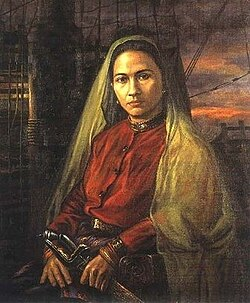

📍 ±1550
Lahir di Aceh dari keluarga bangsawan dengan latar militer.

Laksamana Perempuan Tangguh Penggetar Nusantara
Malahayati adalah laksamana perempuan pertama di Nusantara yang berasal dari Kesultanan Aceh dan memimpin armada laut melawan penjajah.
Ia memimpin pasukan Inong Balee, terdiri dari para janda pejuang, dan bertempur melawan Belanda di perairan Aceh.
Dikenal berani dan tegas, Malahayati turun langsung ke medan perang dan menjadi simbol kekuatan perempuan.
Lahir di Aceh dari keluarga bangsawan dengan latar militer.
Mulai terlibat dalam dunia kemiliteran dan strategi perang.
Memimpin pasukan Inong Balee melawan Belanda di laut Aceh.
Menjadi simbol keberanian perempuan Indonesia hingga kini.